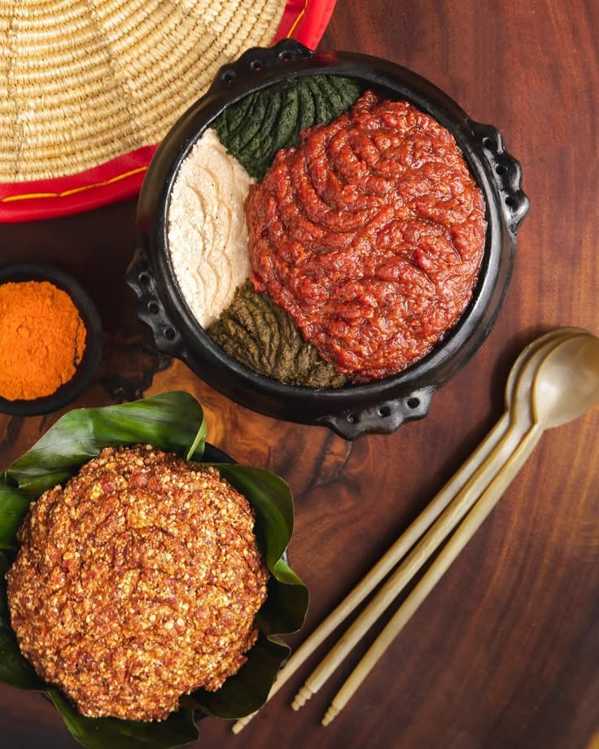

Kitfo
Home

Kitfo is another delight created by us, which is almost unbelivable since it tastes heavenly. Although it is raw meat, the blends of spices mixed in with it create such a warm and delightful experience.
Ingredients
- Raw Ox meat
- Clarified Ethiopian Butter(Kibe)
- Berbere and Mitmita Spices
- Salt for flavoring
- False Banana Tree bread(Kocho)
Steps
- Ground up the beef.
- Melt the Kibe and mix in the Berbere and the beef with it. You can also add the Salt if needed.`
- Enjoy eating it!